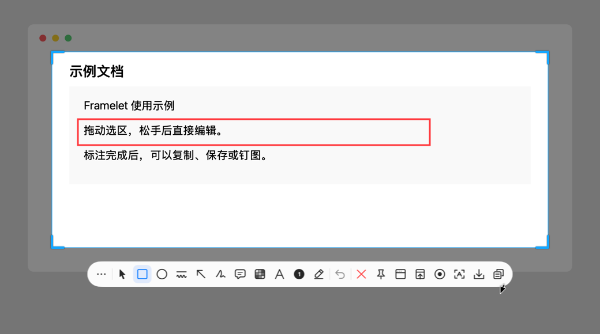
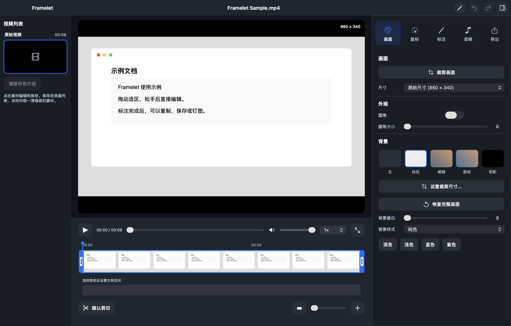
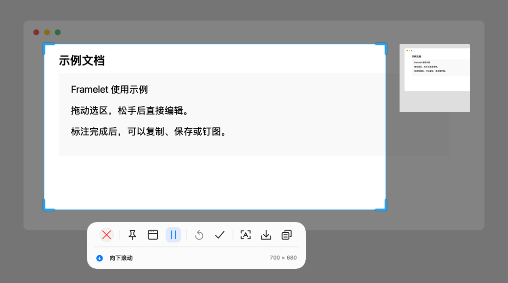
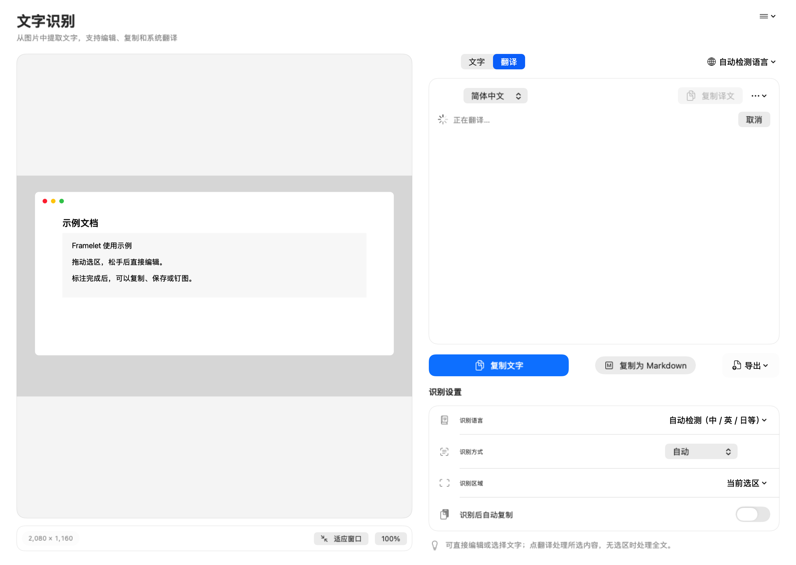
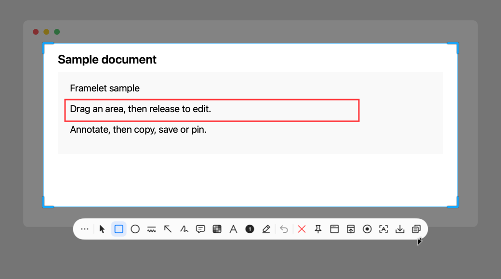
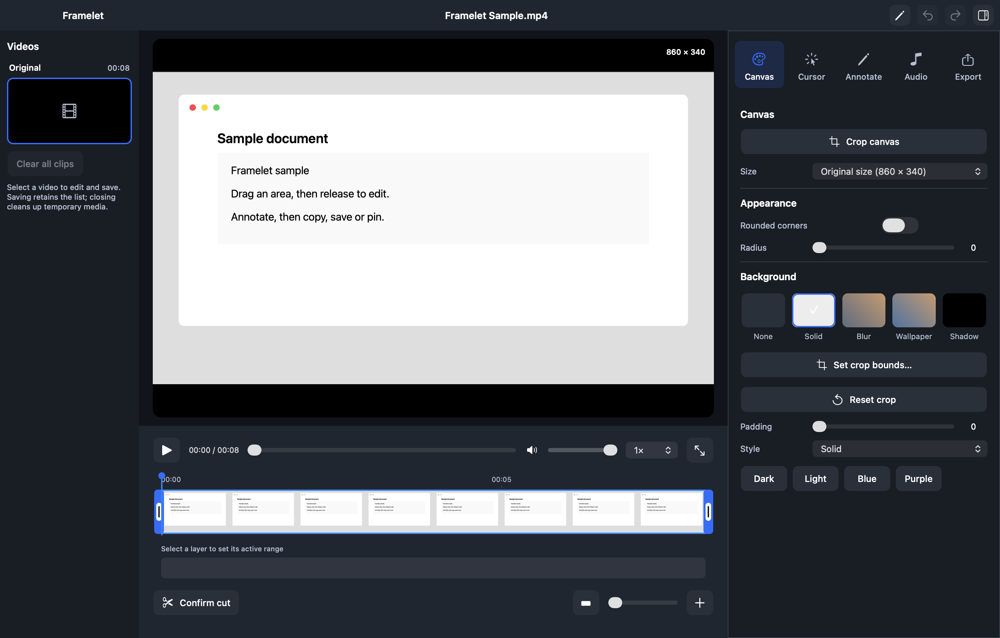
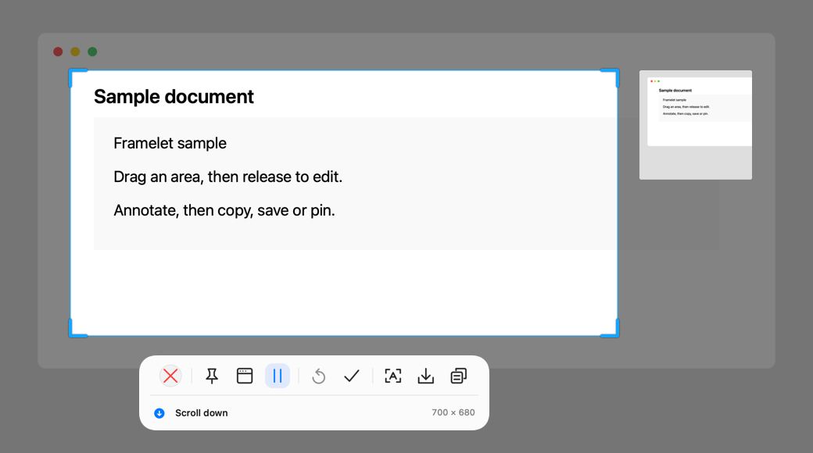
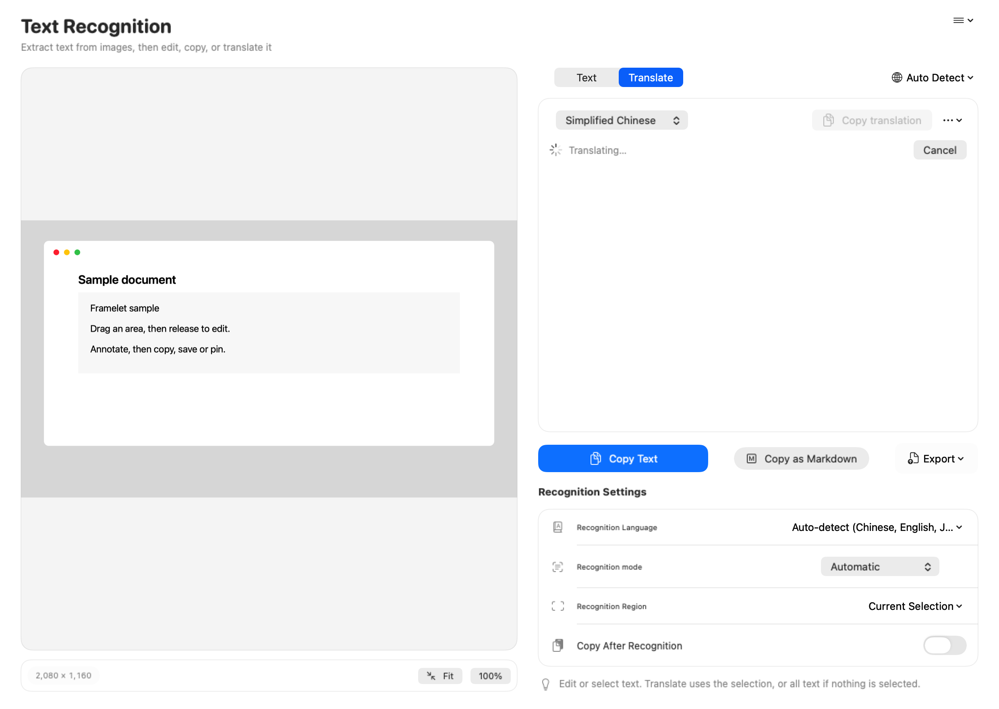

01
截图与悬停识别
拖选区域或选择窗口；右键开启悬停识别，再选择可识别的元素。
FRAMELET / MADE FOR MAC
截图、长截图、标注、文字识别与录屏，在一个 Mac 工具里完成。
macOS 14+ · Apple silicon · 中文 / English
Mac App Store 版本正在准备中；本页不提供开发签名安装包。
01
拖选区域或选择窗口；右键开启悬停识别，再选择可识别的元素。
02
形状、箭头、画笔、文字、编号、打码与放大镜。选区完成后直接开始编辑。
03
采集可滚动内容，检查实时长图预览，暂停、恢复或完成后导出 PNG。
04
录制区域或窗口，在编辑页剪切、标注，再导出 MP4、MOV、GIF 或 WebM。
05
本机识别截图文字，可编辑、复制与导出；翻译方式依 macOS 和语言包而定。
06
复制到剪贴板、保存 PNG 或钉到屏幕作为参考；取消钉图可回到编辑。
界面与操作
以下为应用内帮助使用的组件离屏渲染图，内容为虚构示例；不是实机完整运行截图。




你的内容，留在本机
截图、录制和文字识别在 Mac 本机处理，不自动上传到开发者服务器。系统翻译、主动打开网页翻译、Apple 购买及本网站托管服务各有对应的数据处理方式。
查看隐私说明 →FRAMELET / MADE FOR MAC
Screenshots, scrolling capture, annotation, text recognition and recording — together on your Mac.
macOS 14+ · Apple silicon · English / 中文
The Mac App Store release is in preparation. Development-signed downloads are not offered here.
01
Drag a region or select a window. Right-click to enable hover detection for recognized elements.
02
Shapes, arrows, strokes, text, numbers, mosaic and magnifiers. Edit as soon as you finish selecting.
03
Capture scrolling content, inspect the live image, and pause, resume or finish for PNG export.
04
Record an area or window, trim and annotate in the editor, then export MP4, MOV, GIF or WebM.
05
Recognize screenshot text locally, then edit, copy or export it. Translation depends on macOS and language packs.
06
Copy to the clipboard, save a PNG or pin a reference on screen. Unpin to return to editing.
INTERFACE & WORKFLOW
These are offscreen component renderings used in the in-app Help, with fictional content. They are not screenshots of a complete live app session.




YOUR CONTENT, ON YOUR MAC
Captures, recordings and text recognition are processed on your Mac, without automatic uploads to a developer server. System translation, web translation you open, Apple purchases and website hosting have their own data handling.
Read the privacy policy →